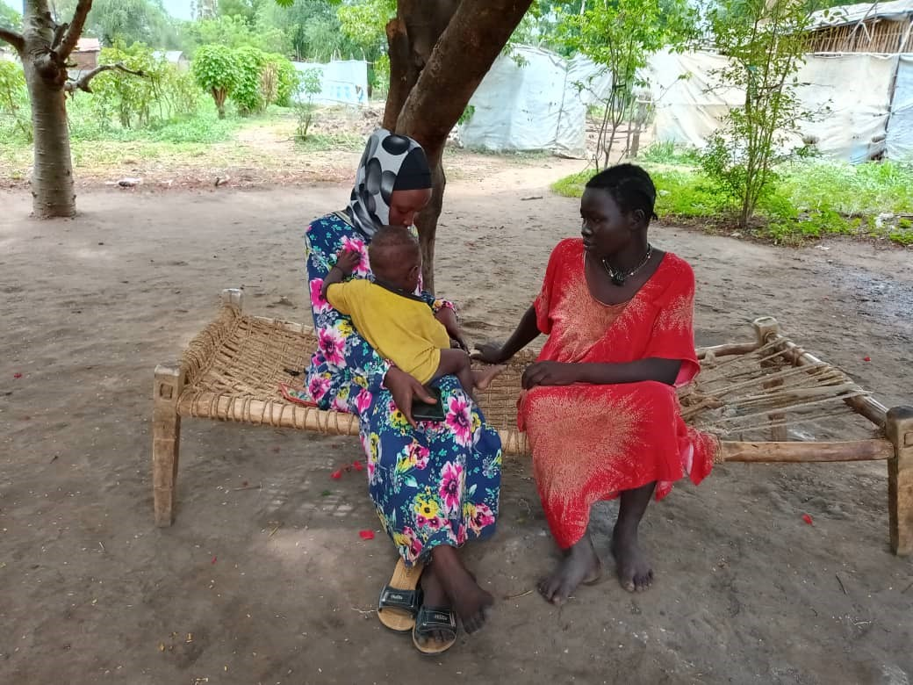
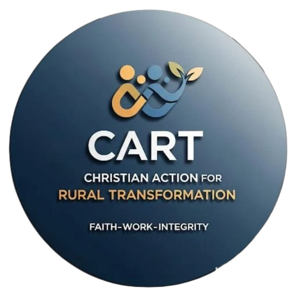
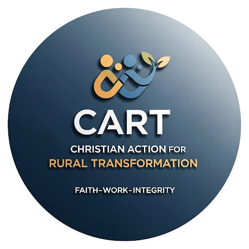
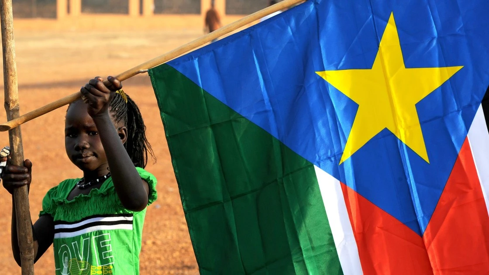
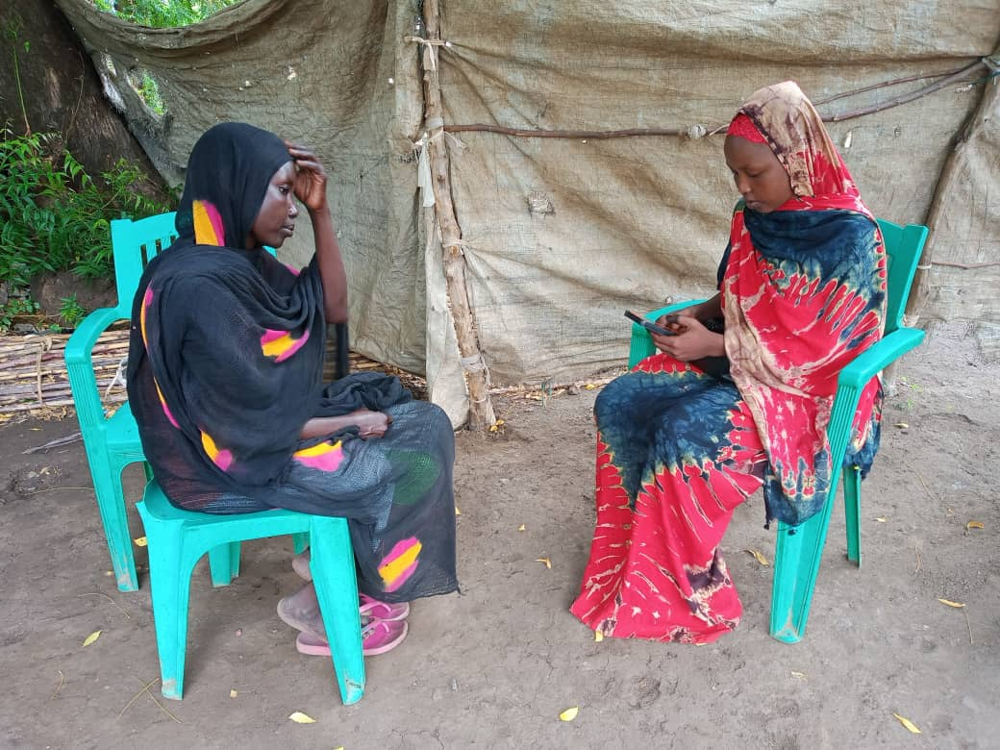

Gallery



Faith-Work-Integrity

We are a faith-inspired, non-profit, non-governmental organization founded in 2021 initially as a Community Based Organization (CBO), then later upgraded and registered as a National NGO in June 2023. CART-SS’ primary objective is to empower rural women with the tools, knowledge, and skills that they need to transform their lives, that of their families and communities for a more resilient and sustainable future.

To empower communities by providing immediate relief and long-term support that fosters dignity, self-reliance, and resilience.
Women, guided by Christ’s love and compassion, powering social and economic transformation in community.
We are inspired by Christ’s teachings and action. Matthew chapter 5:14-16 underpins our humanitarian philosophy – “You are the light of the world. A town built on a hill cannot be hidden...”
We are inspired by the everlasting Christian message of love. We believe that the world is made
better and safer when we each extend a hand of support and give hope to those who critically
need it.
We work within the boundaries of South Sudan. Our intervention scope is broadly determined by severity of need and vulnerability status of women their families and communities in selected locations. So far, we have been partners in the implementation of projects in Nothern Bahr El Ghazal (Aweil North, Aweil East and Awil Center), Jonglei (Akobo, Nyirol, Fangak, Ayod Twic East and Duk counties) and Upper Nile States (Ulang, Maiwut, Renk, Panyikang, Nasir counties).
Research shows that when women and girls are empowered within a peaceful environment, the
ripple effects are far reaching: they reinvest over 80 per cent of their income back into their
families and communities (compared to 30-40 per cent for men), boosting health, education, and
rural economies. The World Bank notes that closing gender gaps in socio-economic participation
could expand global GDP by a factor of up to 40 percent. South Sudan stands to benefit
significantly due to its young, growing population.
Targeting women inside South Sudan is not just equitable, it is strategic. They are often the
backbone of the mainly agro-pastoral economy, producing 60 to 80 percent of food from farmlands
which they do not own. They also have limited rights to livestock and fixed asset ownership
and are often excluded from decision making. Empowering them to participate with resources
like savings and loans, skills training, healthcare support, peace advocacy or market access can
unlock productivity and transformative innovation. It has been established that women-led
businesses reinvest profits locally at higher rates, creating jobs and stabilizing communities (ADB
2022). Moreover, women’s inclusion fosters resilience and peace. Households led by
economically active women are better equipped to weather crises like climate shocks or intercommunal
conflict. Women’s leadership in economic development challenges patriarchal norms,
inspiring broader cultural shifts going forward.

We value partnerships. Our first-line partner are the women themselves. We work with them to identify what works, set objectives, pin-point mobilizable resources in community, engage relevant stakeholders then follow through the roadmap together. We believe participatory approach provides the best mechanism to not only unlock latent capacity but also build into the process a sense of community ownership and accountability.

Alfred’s career is marked by a proven track record in strategic partnership development and resource mobilization across multilateral, bilateral, and private sector entities. He has cultivated strong relationships with key stakeholders, including international NGOs, donors, and community-based organizations, ensuring alignment with global best practices in humanitarian and development work. His expertise includes conducting in-depth donor mapping, analyzing funding trends, and designing tailored engagement strategies to secure long-term support for impactful programs. Alfred is adept at facilitating high-level meetings, fostering collaborative dialogue, and driving follow-up actions to translate opportunities into tangible outcomes.
Alfred holds advanced qualifications in international development and strategic management, complemented by extensive experience working with diverse stakeholders across Europe and Africa. Fluent in English and French, he is well-positioned to navigate the complex landscape of European donor ecosystems, including institutions like the Swiss Agency for Development and Cooperation (SDC) and international NGOs. His strategic insights and collaborative spirit make him a vital asset in advancing CART’s mission to create lasting change in rural communities.
Block 121, Juba town, Central Equatoria State,South Sudan.